On this gallery, you can find some of the umbrellas we spotted around the world. Grab a cup of coffee, hit play on your favourite album and appreciate the rain. We hope you find here something that you didn't even knew you had lost.
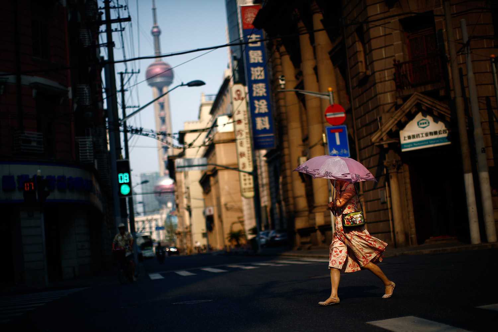
Hong Kong, 2014
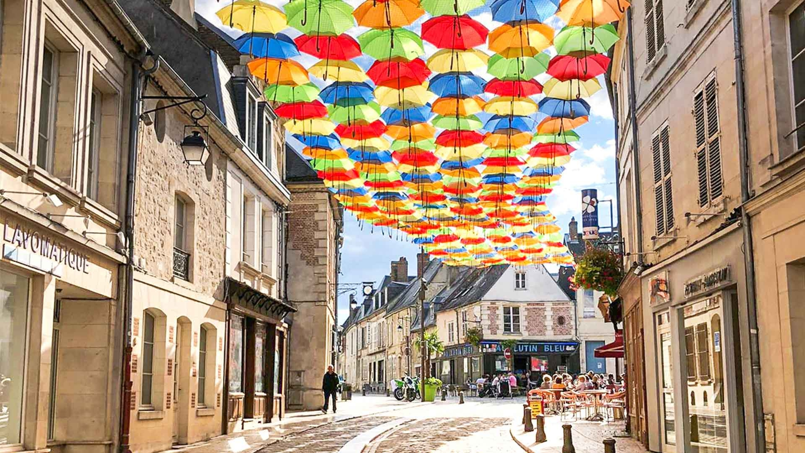
Laon, 2018Orlando, 2021
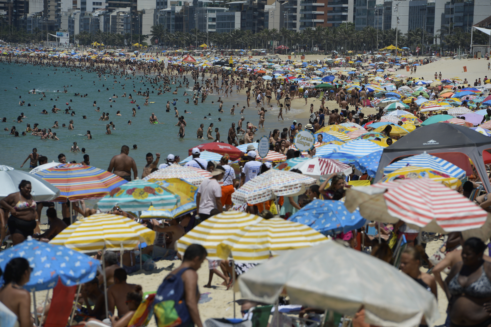
Rio de Janeiro, 2023
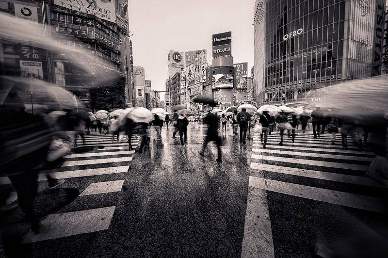
Tokyo, 2017
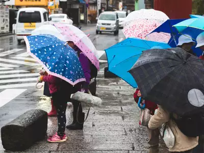
Jaipur, 2008
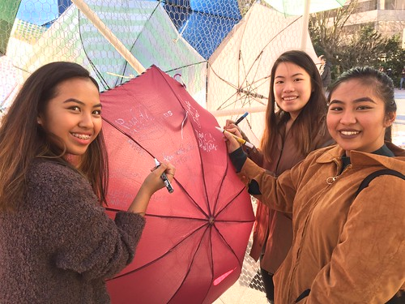
Manila, 2016Hong Kong, 2014Olinda, 2022Osaka, 2022
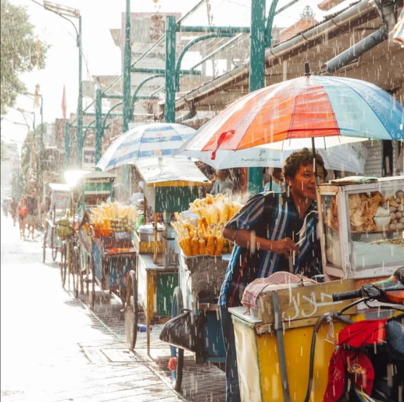
Bali, 2016
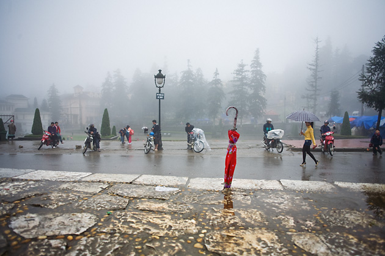
Hanoi, 2020
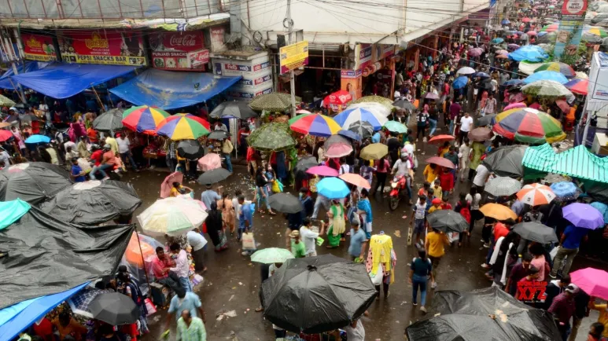
Kolkata, 2009Toronto, 2018Seoul, 2021
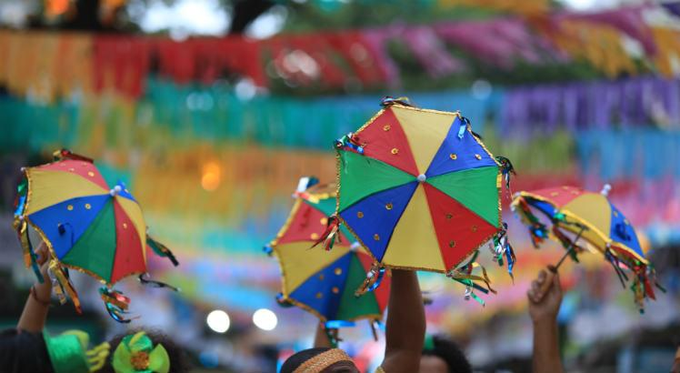
Recife, 2019
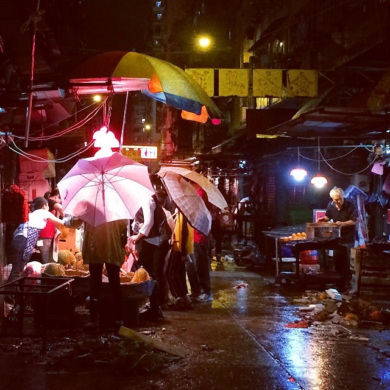
Hong Kong, 2014
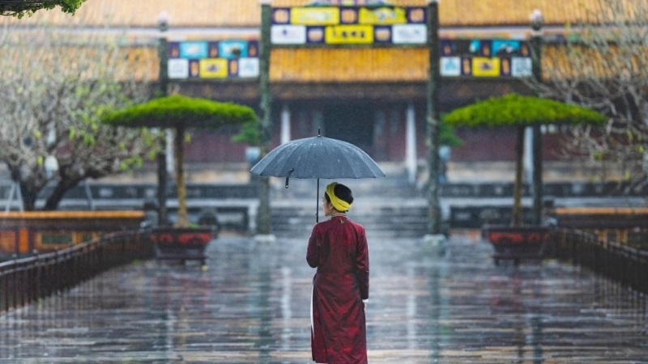
Ho Chi Mihn, 2022
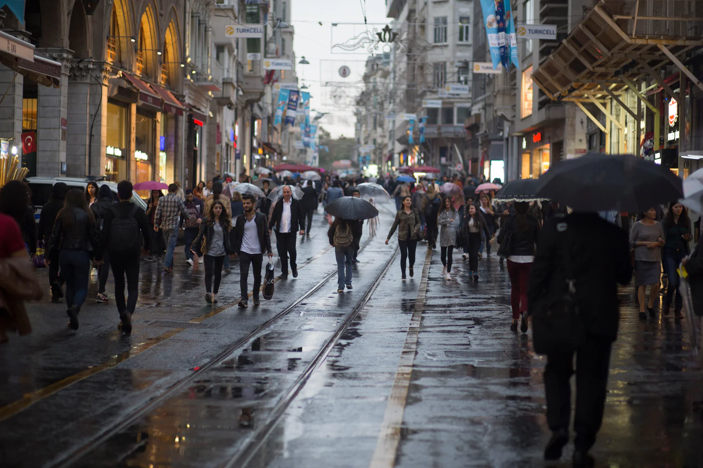
Istanbul, 2011
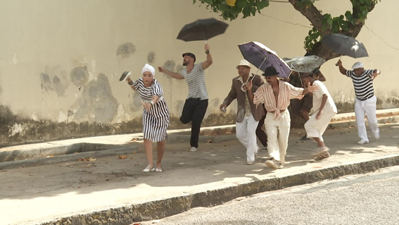
São Paulo, 2009
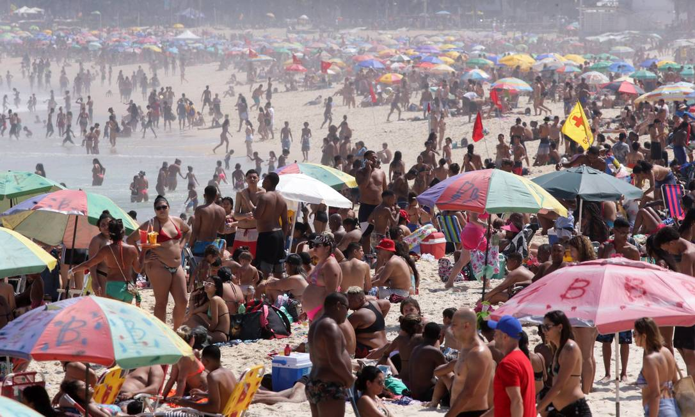
Ipanema, 2018Berlin, 2021Vancouver, 2022Shanghai, 2018
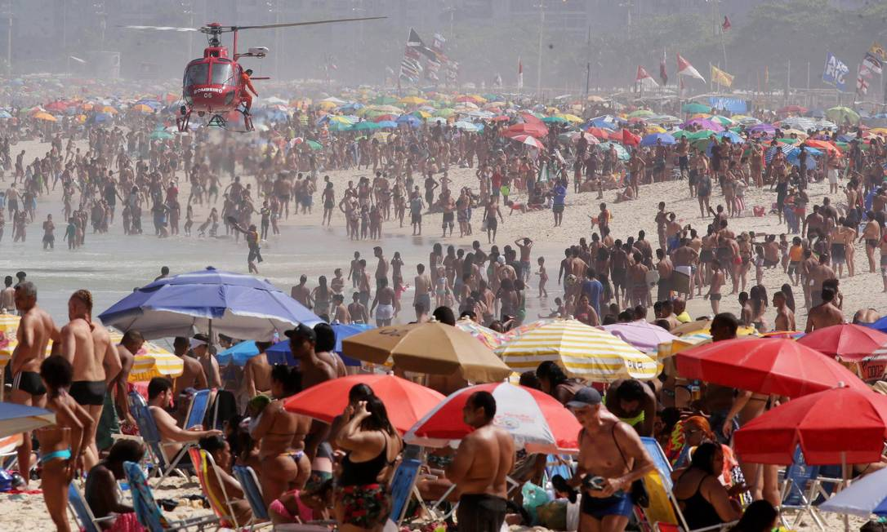
Guarujá, 2007Cambridge, 2021Shibuya, 2019